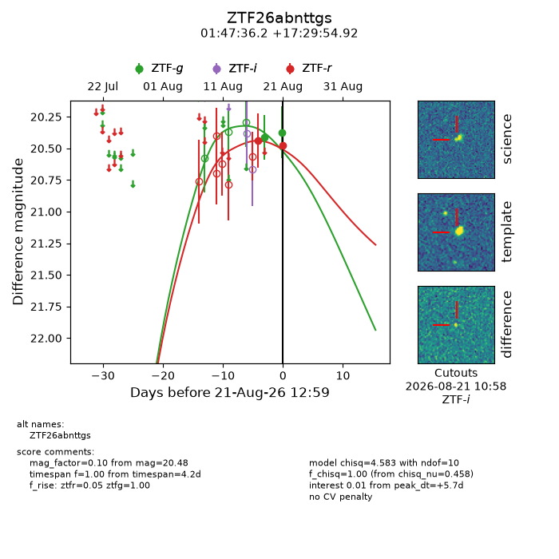
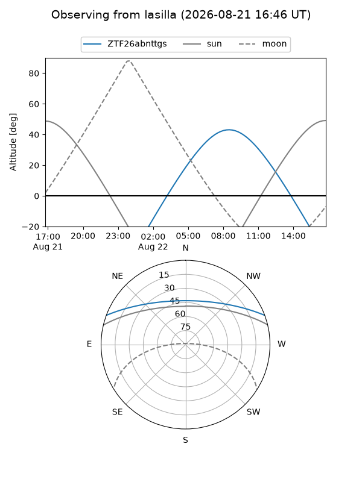
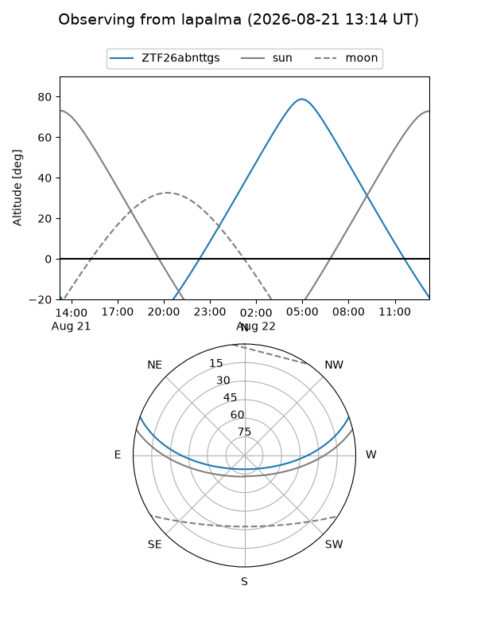
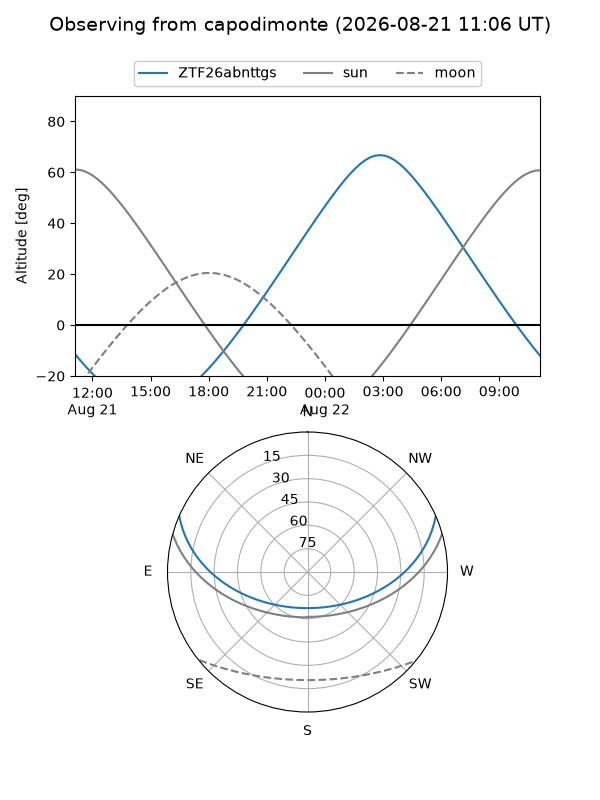
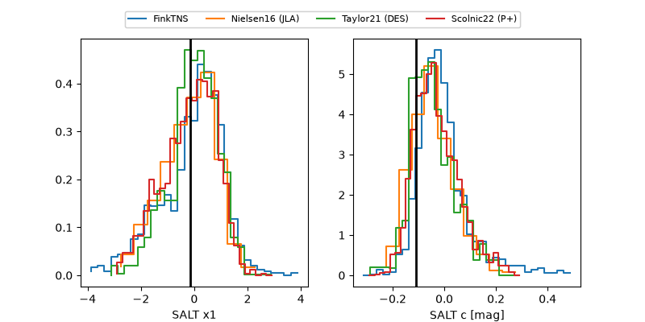

ZTF26abnttgs
Target ZTF26abnttgs at 2026-08-21 13:02
Aliases and brokers:
FINK-ZTF: ztf.fink-portal.org/ZTF26abnttgs
Lasair-ZTF: lasair-ztf.lsst.ac.uk/objects/ZTF26abnttgs
ALeRCE-ZTF: alerce.online/object/ZTF26abnttgs
Direct TNS query: direct search
alt names
ZTF26abnttgs (ztf,fink_ztf)
Coordinates:
equatorial (ra, dec) = 26.9009,+17.49859
equatorial (HMS+DMS) = 01:47:36.22,+17:29:54.92
galactic (l, b) = (141.4839,-43.34070)
Flags:
peak dt: +5.7
Photometry:
last ztfg=20.37, ztfr=20.48
2 ztfg, 2 ztfr detections
Lightcurve

Visibility



Additional plots
